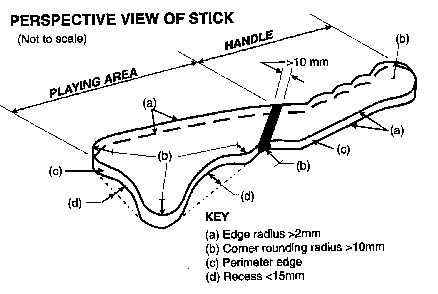

Materiaal
De stick is gemaakt uit hout of een ander materiaal dat horizontaal drijft in water, en is afhankelijk van de ploeg zwart of wit. Hij zal voldoen aan de afmetingen beschreven in de tekening. De maximum afstand tussen 2 punten op het speelgedeelte bedraagt niet meer dan 220mm. Het inspringend deel op kop- en binnenstuk (op de tekening 'd', 'recess') bedraagt maximaal 15mm, de hoeken zijn afgerond op minimaal 10mm. Tevens mogen de zijkanten niet scherp zijn (kwetsuren) . In de officiële reglementen staan nog een aantal zaken, maar deze zouden ons te ver doen afdrijven van de praktijk…
Daarnaast is elke speler uitgerust met een duikbril met twee veiligheidsglazen (herkenbaar aan het symbool 'T' of het woord 'Tempered' op de glazen). Een duikbril met 1 groot glas is dus niet toegelaten. De snorkel mag ingekort zijn, maar mag geen scherpe kanten hebben; zwemvliezen moeten plooibaar zijn, en opnieuw geen scherpe kant hebben. Hetzelfde geldt voor de beschermende handschoen. Een waterpolokap (voor de herkenbaarheid van de ploegen en om de oren te beschermen) is verplicht. Knie- of elleboogbeschermers mogen gedragen worden, op voorwaarde dat ze bestaan uit zacht materiaal. Wetsuits (duik- of surfpakken) en loodgordels zijn niet toegelaten. Veiligheidshalve is het niet toegelaten om uurwerken, kettingen, ringen enz. te dragen. Gaat het om niet verwijderbare sieraden, dan moeten deze voldoende ingetapet worden.